01The question
A vegetation index does not follow the rain on the same day. In a dry-land area the rain of a month fills the soil, the leaves come some weeks later, and the greenness of a month is a sum of the rain of the months before it. How long that takes depends on the soil, the roots and the cover: a grassland answers in a month, a deep-rooted woodland in three. A map of that delay, and of where there is any response at all, says where rain limits the vegetation and where something else does.
Two tools answer it, and they ask different questions:
- Lagged correlation
- You bring a driver: a rainfall series, a climate index, the mean of a region. At lag k each pixel's value at t is paired with the driver's at t − k, so the driver leads, and a driver that acts two months later shows its strongest correlation at lag 2. The maps are the best correlation, its lag and its significance.
- EOF
- You bring nothing. The cube of maps over time (dates by pixels) is decomposed into modes: a map (the EOF) and a time series (its principal component, PC) each, ordered by the share of the variance they explain. The first mode of vegetation anomalies is usually the whole area greener or browner than its calendar month's normal, and its PC says when.
Both work on anomalies: the seasonal cycle of each pixel is taken out first (the mean of each calendar month), because without that step every pixel correlates with every seasonal driver and the first mode is simply the seasons. Both have a test chosen for series that remember their past, which is what monthly vegetation does. Zeit has both as zeit.lagged_correlation and zeit.eof; this page is about the Janus tools, Tools → Temporal dynamics → Lagged correlation and EOF / principal components, which read the window in strips of rows and so work on a series that does not fit in memory.
02The example
The screenshots use 25 years of 16-day EVI at 250 m over 170 km of western France, 45.2° to 46.9° N and 0.9° W to 0.95° E (the Charente and the Poitou): 575 dates from 2001-01-01 to 2025-12-19, over 677 × 680 pixels in EPSG:3035, one multiband GeoTIFF of 622 MB. Cloudy dates leave gaps: 360,000 of the 460,000 pixels have enough dates to be kept (the 0.8 valid fraction of the EOF; the lagged correlation keeps 361,000). It is a temperate, mostly agricultural landscape, not a dry land: the rain here limits the vegetation less than it does in a semi-arid one, so the correlations are weak, which is a fair case to study how to read weak ones. The rainfall is CHIRPS v3 monthly for the same box, fetched from inside Janus (next section), and both series have the same period.

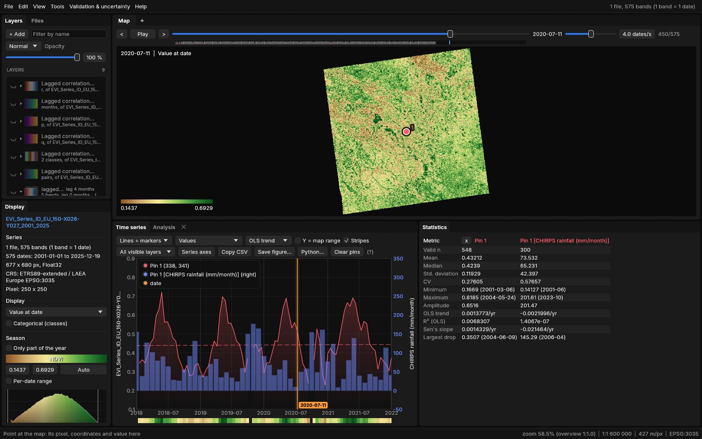
03The rain
File → Climate data... downloads CHIRPS v3 rainfall (Climate Hazards Center; 0.05°, about 5 km, 60°S to 60°N, from 1981) for the map's visible area, the ROI or a box in degrees, between two months (the active series' dates by default). Only the box is read from each remote cloud-optimized GeoTIFF, so a small area is a few kilobytes a month, not the whole grid. The window counts the files and the pixels before Download, which is a task like any other (Tools → Tasks, with Cancel); a file already in the folder is kept, so downloading again reads only the dates that failed.

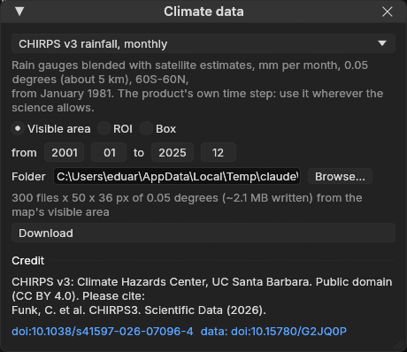
The result opens as a series layer, CHIRPS rainfall (mm/month), on its own coarse grid and on top, with the series being studied staying active. Each GeoTIFF carries the source, the licence and the citation; CHIRPS is in the public domain and the guide's data credit it (Funk et al. 2015). The chart draws it as bars; put it on the right axis in the chart's Series axes menu, as in the figure above.
The rain's grid is 5 km and the NDVI's is much finer. That is what the lagged correlation expects: the driver may be on any grid and in any CRS, and it is put on the series' grid first, by nearest neighbour or bilinear. Each NDVI pixel is then paired with the rainfall of the 5 km cell it is in, and every pixel inside a cell shares one driver; the maps below will show the cells.
04Lagged correlation
Open Tools → Temporal dynamics → Lagged correlation with the NDVI series active. A raster run only: the correlation of a pixel needs no neighbour, but the false discovery rate below needs every pixel's result.

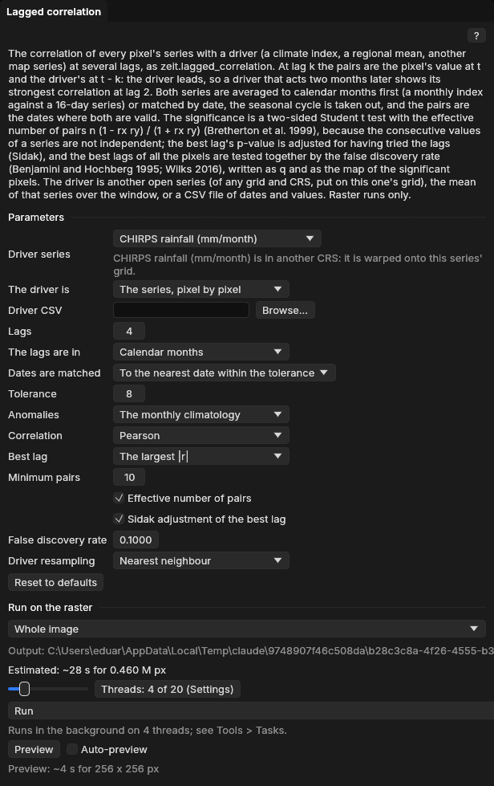
- Driver series, The driver is
- Another open series (the CHIRPS layer, here) read pixel by pixel; or that series' mean over the window, one regional index for every pixel; or a CSV file of dates and values (a monthly index of ENSO, say: a date such as
2020-03and a value on each line, a header skipped, empty orNAas missing), whose value column is the Driver column: a name from the header, or a number counted after the date column (the window lists the file's columns). - Lags
- The lags 0, 1, ..., K. The default is 3; the rain of a dry-land area may need 4 to 6.
- The lags are in
- Calendar months (the default): both series are averaged to months first, so a monthly rainfall can drive a 16-day NDVI and a lag is a month whatever the cadence. Dates of the series matches the driver to the series' dates (the nearest within a tolerance, exactly, or in the same month or year) and counts the lags in observations: two steps of a 16-day series are 32 days.
- Anomalies
- What is taken out of both series before they are correlated: the monthly climatology by default. Without it, the seasonal cycle of both makes every pixel correlate with the rain, at the lag that lines the seasons up, and the map is a map of the calendar. Raw values correlate their trends too.
- Method
- Pearson's r, or Spearman's on the ranks, for outliers and monotone relations that are not straight lines.
- Best lag
- Which lag is each pixel's best: the largest |r| (the default), or the largest positive or the largest negative one. A vegetation that responds to rain with a plus sign wants the positive.
- Effective n, Sidak, FDR
- The three corrections of the next section.
What the test counts
Monthly anomalies of vegetation are not independent: next month looks like this one. A correlation of two such series over 100 months is not worth 100 independent pairs, and a t test that thinks so is far too confident. Janus uses the effective number of pairs n (1 − rx ry) / (1 + rx ry), with rx and ry the lag-1 autocorrelations of the pixel's series and of the driver (Bretherton et al. 1999) and a two-sided Student t test on it. It is written to the map Effective pairs at the best lag. Switching it off treats the pairs as independent, and the p-values come out too small for smooth series.
Two more steps follow, because there are K + 1 lags and thousands of pixels:
- The best lag's p-value is adjusted for having tried the lags, 1 − (1 − p)K + 1 (Šidák): the best of four correlations is not a single draw.
- The pixels' adjusted p-values are tested together by the false discovery rate (Benjamini and Hochberg 1995): of the pixels marked significant, about this fraction is expected to be false hits, 0.10 by default. A 5% test on each of the 361,000 pixels of the example would mark some 18,000 of them by chance alone. Wilks (2016) recommends twice the level a single test would have, which is where 0.10 comes from.
The run writes seven maps, each a layer: the correlation at the best lag, the best lag, the p-value of the best lag, the false discovery rate q, the map of significant pixels, the effective pairs at the best lag, and the correlation at every lag (a band for each).
05Reading the maps
Three of them carry the answer. The correlation says how much, the lag says when, and the significance says where to believe either:

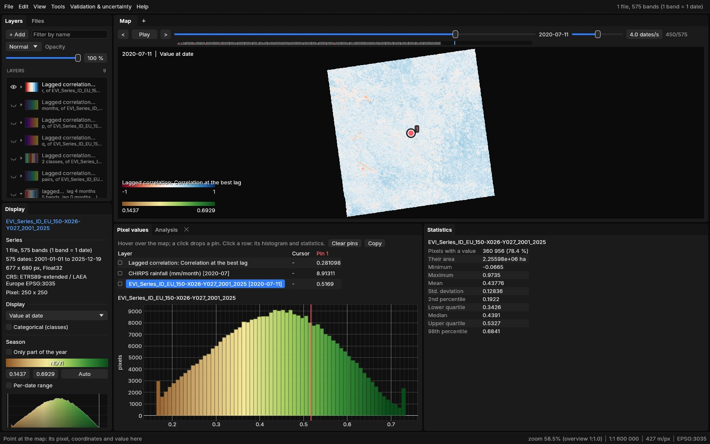

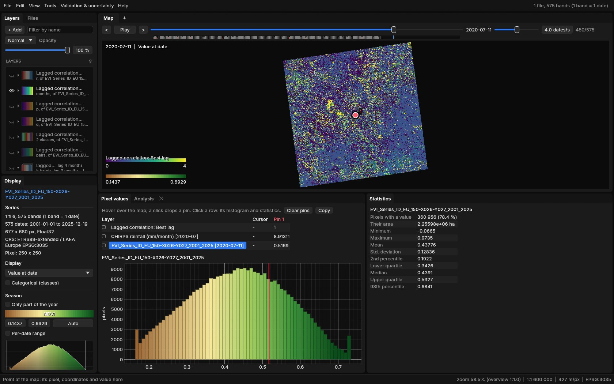

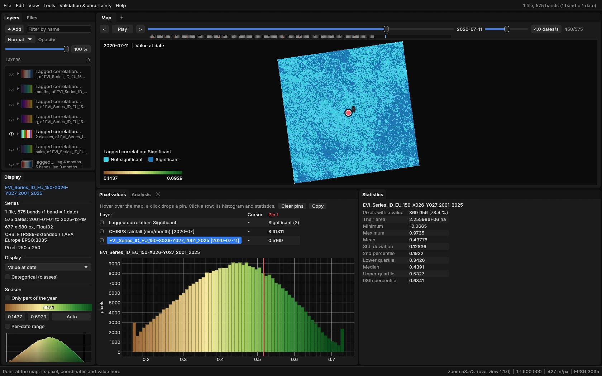
What the maps say about this area: 163,491 of the 361,137 pixels (45.3%) pass the false discovery rate of 0.10. Where they do, the median best lag is 1 month and r is between 0.17 and 0.32 (the 5th and 95th percentiles; median 0.22). Over all the pixels the median r at the best lag is 0.15, which is what a monthly anomaly of EVI at 250 m and rain at 5 km give: a weak relation that is real, but explains a few percent of the variance of a pixel. The lag is 1 month for 71% of the significant pixels, 0 for 25% and 2 to 4 for the remaining 4%; the lag map shows the one-month response nearly everywhere and the lag 0 as scattered pixels, with a few patches at lag 4. The median effective number of pairs is 259 against 300 months: this vegetation remembers less than a dry land's. The pale red-blue of the first map is that, a weak correlation, and the colour scale is kept at the full -1 to 1 so that it cannot be read as a strong one.
How to read the lag map
- A lag counts only where the pixel is significant. Where the correlation is weak, the best of four small values is any of them, and the lag map there is noise. Look at the lag map through the map of significant pixels.
- Lag 0 is not "no delay". Months are the unit: a response in 10 days is lag 0. And a pixel whose best lag is the last one tried may be better at the next: lengthen the lags and run again.
- The blocks are the rain's. The driver is a 5 km cell shared by all the pixels in it, so the maps show its edges. A finer driver, or a regional mean, would not change what the pixels do, only what they are compared with.
- A lag is not a cause. The pixel follows the driver after k months; that the driver is why is another question. Two series with the same slow trend or a seasonal residual they share correlate at every lag, and the effective-n correction reduces that but does not remove it.
06The Modes tab: one pixel's lags
The best lag is one number a pixel. Analysis → Modes, with a lagged-correlation run open, draws all of them for the pixel under the cursor or a pin: r against the lag, with the |r| a correlation has to pass at that pixel (it depends on the pixel's effective n), the share of pixels that pass the false discovery rate, and a histogram of their best lags.

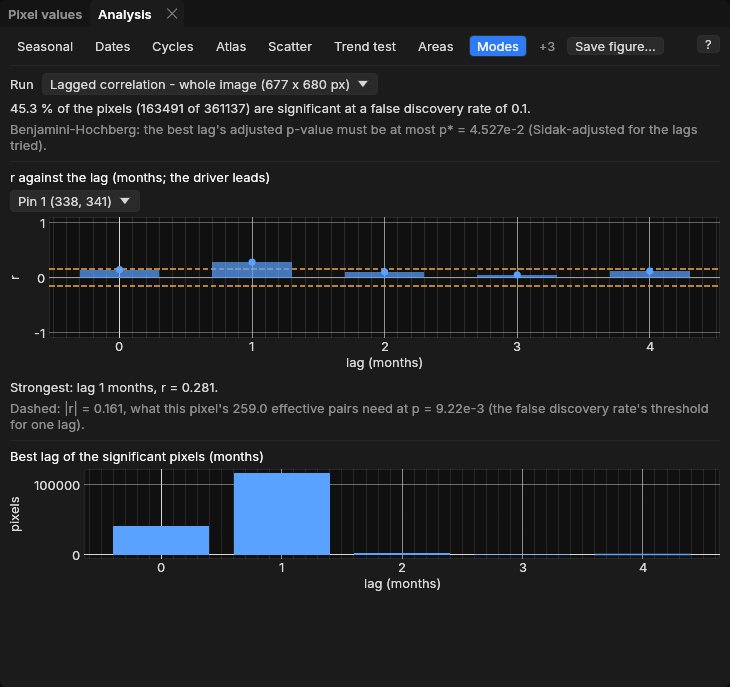
The shape of the curve says more than its peak. A response that peaks at lag 2 and falls on both sides is a delay; a curve that decays from lag 0 is a regional mean followed at once; a flat one inside the dashed lines is a pixel with nothing to say. The histogram is the answer to "with how much delay" in one picture: where its mass sits is the area's lag.
07On the chart, and in the calculator
To see a lag, the rain should be drawn shifted. Calculate the correlation as a map with the raster calculator, corr(evi, rain, lag=1m): the correlation over time of the two series, an image, with the driver y leading by one month (the calculator's guide has its syntax). On a layer that came from corr(x, y, lag=k), the chart's Series axes menu offers Shift y by the lag (k): the rain is drawn k months later and labelled (shifted +k), so that its peaks fall under the peaks of the EVI they were correlated with. With the 1-month lag of this area the shift is a single bar width, so the two charts below differ by little, which is the honest picture of a weak response. It is a view only; the data and the dates in the inspector do not change.

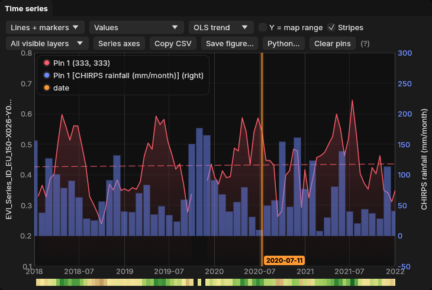

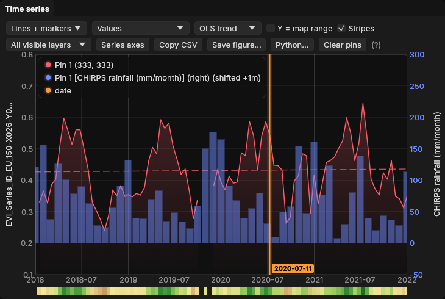
The calculator's corr() correlates the values as they are, seasonal cycle included, and gives r only. For the anomalies, the p-value that counts the series' memory and the best of several lags in one run, use the tool.
08The EOF
Now without the rain. Tools → Temporal dynamics → EOF / principal components takes the cube of the NDVI anomalies and finds the few patterns that explain most of it. The steps are Zeit's, written from the papers:
- Anomalies. The monthly climatology is taken out of each pixel (a month needs two values at least). A harmonic fit (a constant and sine and cosine pairs of the year) is there for dates that are not monthly, and The pixel's mean leaves the seasons in, which makes them the first modes.
- Weights. Each pixel counts for the area it covers (its geodesic area in the series' CRS, normalized to mean 1); the cosine of the latitude is for a geographic CRS; none counts every pixel the same.
- The decomposition, from the small side. The cube has hundreds of dates and perhaps millions of pixels, so it is the dates-by-dates matrix that is decomposed, summed over blocks of pixels read in turn. With up to 1000 dates (Automatic, the solver's default; the 575 dates of the example are exact) it is exact; with more it is a randomized range finder with power iterations (Halko, Martinsson and Tropp 2011), a few passes over the pixels, which is as good as exact for the first modes. A window that does not fit in memory works: the anomalies are kept as float32 in memory, or in a scratch file of the run's folder when they would take more than a quarter of the RAM.
- Units. A mode's map is in the data's units per standard deviation of its PC: a value of 0.03 on an NDVI map says that when the PC is one standard deviation above its mean, that pixel's NDVI is 0.03 above its normal. Orthonormal EOFs gives unit-length maps and puts the variance in the PCs.

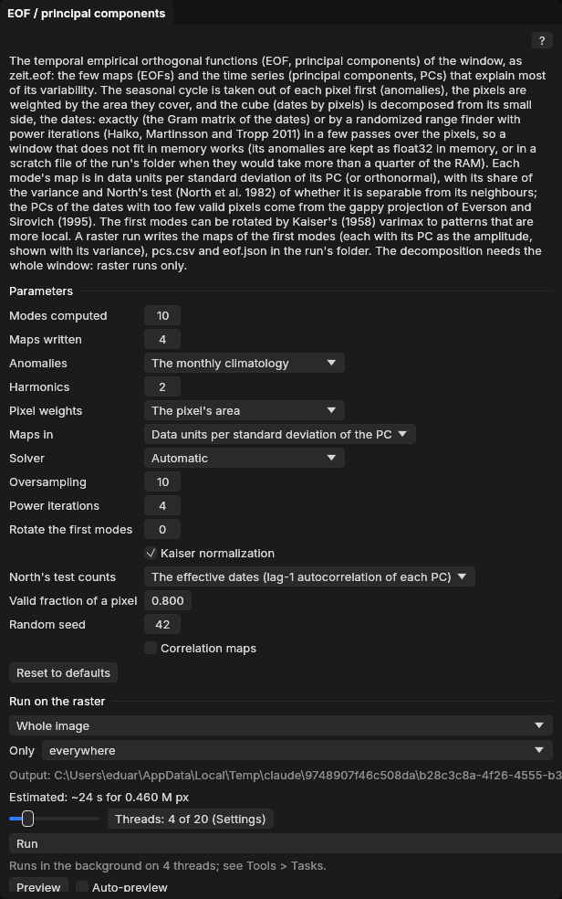
A run writes the maps of the first modes, each a layer EOF 1, EOF 2... in a red-blue scale (the layer's amplitude is the mode's PC, and its name carries its variance), and, in the run's folder, pcs.csv (every PC by date) and eof.json (the variances, North's test and the settings). Correlation maps adds, for each, the correlation of every pixel's anomalies with the mode's PC, which has the same pattern in units that need no scale.

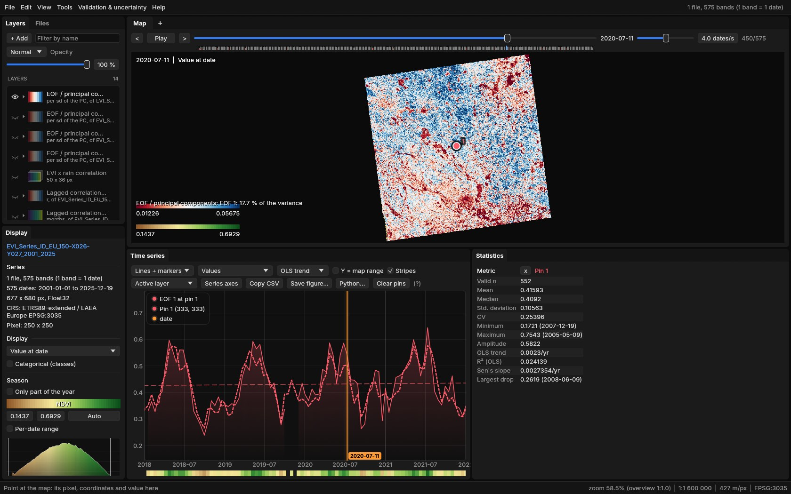
In this area EOF 1 explains 17.7% of the variance of the anomalies, six times the next mode (3.0%, then 2.7% and 2.4%). Its map has the same sign over all the pixels, 0.016 to 0.053 EVI per standard deviation of the PC (the 5th and 95th percentiles; median 0.036): the whole area greener or browner than its calendar month's normal at the same time. Its PC says when. The years with the lowest annual mean are 2010, 2009, 2003 and 2005 (2005 is the driest of the record, 535 mm of rain against 660 to 1100 in the others, and 2003 was the year of the heat wave), and those with the highest are 2024, 2015, 2014 and 2023, three of them among the four wettest years. Annual mean of the PC and the year's rain correlate at 0.33, and the area's monthly rain leads the monthly PC 1 by one month with r = 0.31, the lag the lagged correlation found pixel by pixel. So the PC partly follows the rain, and not only it: 2009 and 2010 are low years that were not particularly dry. EOF 2 (3.0%) is a north-south gradient and EOF 3 (2.7%) a patch of one sign in the south-west, and neither stands apart from its neighbours (next sections).
The Modes tab, for an EOF
Analysis → Modes with an EOF run: the scree plot (the share of the variance of each mode, with North's error as whiskers: a mode that is separable from its neighbours is filled, one that is mixed with them is hollow), the principal components over the dates, and a table of the modes with their variance, their error and whether they are separable. Show map opens a mode's map; Copy and Save PCs give the components to a spreadsheet or a script.

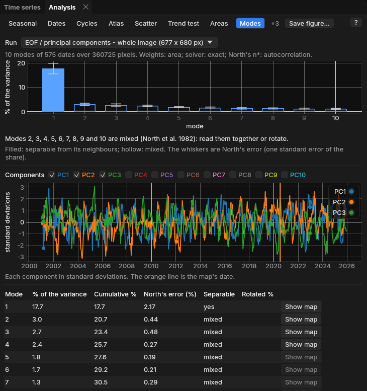
With a map of a mode on top of the others, the chart also draws the mode at the pixel under the cursor or a pin: the mode's amplitude at that pixel, which is its PC times the map's value there, over the pixel's own anomalies. It says how much of this pixel's series the mode explains, which no number does as quickly.

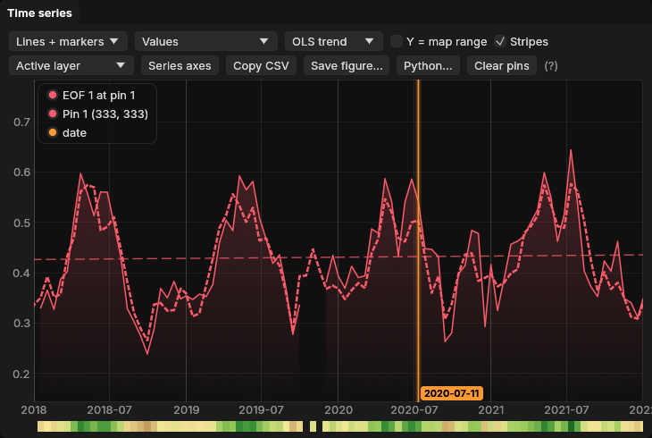
The two tools meet here. The PC of a mode is a series, and a series can be the driver of the lagged correlation: save the PCs (Save PCs writes pcs.csv: date, year, filled, then pc1, pc2...), and run Lagged correlation with it as the driver (A CSV file, the file as it is: the first column is the date, and Driver column names the PC wanted, pc2 say; left empty it is pc1, the first column that is not year or filled): the map says where the mode's pattern holds, and at what lag it follows the rain.
09How many modes are real
An eigenvalue is estimated from a finite number of dates and has a sampling error of about λ √(2 / n) (North et al. 1982). When the error bars of two neighbouring eigenvalues overlap, the two modes are not separable: sampling noise alone could rotate one into the other, and neither should be interpreted by itself, only the pair as one subspace. The Modes tab shows it as filled and hollow bars; eof.json has it as north_error and separable.
What matters is the n. It is the number of independent dates, and monthly anomalies of vegetation remember. The window's default, The effective dates, counts T (1 − ρ) / (1 + ρ) with the lag-1 autocorrelation ρ of each PC, fewer for a smoother PC. All the dates counts every date, as the usual packages do, which is right for a series with no memory and gives error bars that are far too narrow for this one: modes look separable that are not.
In this run the lag-1 autocorrelation of PC 1 is 0.62, which makes its 566 dates worth 133 independent ones. One mode stands clear of its neighbours with the effective dates (EOF 1, 17.7% against 3.0%), against two with all the dates (EOF 1 and EOF 4, 2.4%: it only looks apart because its error bars were drawn for 566 independent dates). Modes 2 and 3 (3.0% and 2.7%) are mixed with each other either way, and so are those of the tail from the fifth on, where the variance decays slowly and what is left looks like noise: do not read those modes by themselves.
10Rotating the first modes
An EOF is a statistical pattern, not a process. The modes are orthogonal by construction and real phenomena are not, so a mode can be a mixture of two. Rotate the first modes (at least 2) rotates that many by Kaiser's (1958) varimax, which pushes the loadings of each pixel towards a single mode and so gives patterns that are more local and easier to read. Kaiser normalization (on by default) divides the rows by their communality first. The rotated maps are written as Rotated EOF layers, ordered by their variance, which is no longer the order of the singular values.

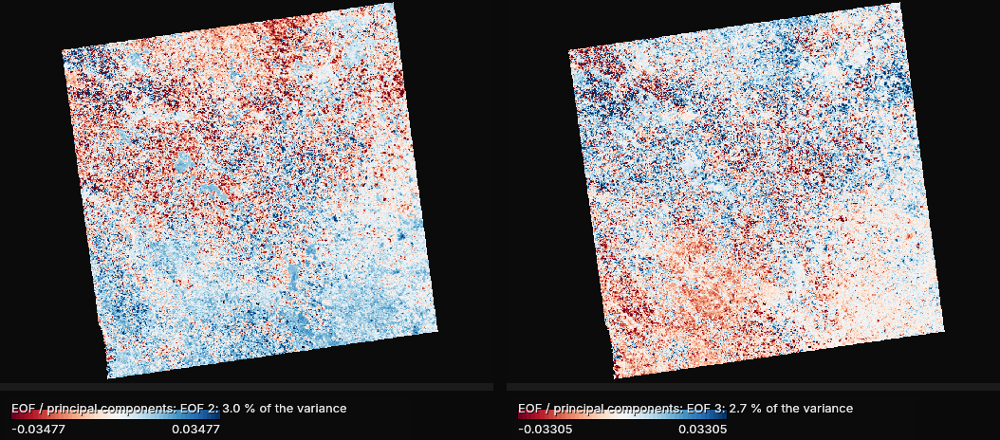

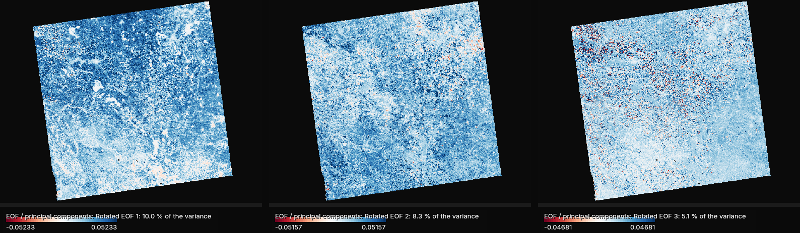
Rotation is the analyst's choice and the result depends on it: the patterns change with the number of modes rotated, and rotating modes that North's test says are mixed is what it is for, not a way to make them real. Rotate the modes that together are a subspace, and say how many.
11Doing it again
The analysis is meant to be repeatable by someone who does not use Janus. A run of either tool leaves, beside its maps, rerun.py, a script of Zeit that redoes it (the result's Provenance window gives the same code with Python..., and Python history keeps it): zeit.eof(series, rotate=3, north_n='autocorrelation') and zeit.lagged_correlation(series, other_cube, lags=4), with the parameters of the window as they were: the script lists those that are not Zeit's own defaults (Janus's The effective dates is not Zeit's default, so north_n is there). The driver is read as zeit.load_raster(folder, masked=True, date_format="%Y-%m", like=series, resampling='nearest'): Zeit puts it on the series' grid when it is told to, and reads chirps_2020-01.tif as a month only when told the format. The false discovery rate is a function of its own and takes any array of p-values:
import zeit
series = zeit.load_raster("EVI_series.tif", masked=True).squeeze("band", drop=True)
rain = zeit.load_raster("chirps/", masked=True, date_format="%Y-%m",
like=series, resampling="nearest") # on the series' grid
lc = zeit.lagged_correlation(series, rain, lags=4) # the driver leads
lc.best_lag.where(lc.significant) # the lag, where it can be read
ds = zeit.eof(series, n_modes=10, rotate=3, north_n="autocorrelation")
ds.variance.values[:3], ds.separable.values[:3]
mk = zeit.mann_kendall(series)
q, threshold, significant = zeit.fdr(mk.p, alpha=0.10) # any map of p-valuesAn assistant can run both without the window: the MCP tool run_tool takes "tool": "eof" or "lagged_correlation", the series and the params (describe_tool lists them), and climate_data downloads the CHIRPS rainfall for a box (bbox_lonlat, start and end as YYYY-MM) and answers its folder as a series, so the whole of this guide is a handful of calls. The lagged correlation's driver is not in params but is the call's coarse, as it is ImproPhe's series to sharpen (unless y_mode is "file", with y_file and the column y_column):
{ "tool": "lagged_correlation",
"series": "EVI_series.tif",
"coarse": "chirps/*.tif",
"params": { "lags": 4, "best": "positive", "alpha_fdr": 0.1 } }best takes "absolute" (the default), "positive" or "negative"; coarse is a path, a glob or an object with paths as series is.
12Speed, and checked against the originals
Zeit's own benchmark, on 25 years of 16-day EVI over a 170 km square of Europe (575 dates, 677 × 680 pixels at 250 m, averaged to 300 months, 361,000 pixels kept): the exact EOF takes 1.89 s on 8 threads, against 8.83 s for eofs and 11.3 s for xeofs doing only the decomposition; the lagged correlation at 7 lags of 460,000 pixels takes 2.3 s, against 31.5 s for xarray.corr alone, which gives r and nothing else. Zeit is 3 to 8 times faster than the references on one thread and more on eight. The decompositions agree with xeofs and eofs to rounding (the explained variance to 1e-14, the maps and PCs to 1 − |cos| of 1e-14, North's errors to 1e-14), the varimax with xeofs' rotator to 1e-14, and the correlations with xarray.corr (r identical in float32, no pair count or best lag different), scipy's Pearson, Spearman and Student t and its false discovery rate. The tables and the conventions that differ between the packages are in Zeit's comparison with the originals.
Janus reads the window in strips and writes maps, which the library calls do not, so its times are its own: on the series of this guide (575 dates, 460,000 pixels, 361,000 of them kept) and 4 threads, the EOF of 10 modes takes 8 s (9 s with the first three modes rotated, 4 maps written) and the lagged correlation against the CHIRPS layer at 5 lags 20 s, with the maps written and open in both cases. The maps agree with Zeit's calls on the same data; the self-test of the application checks it on a synthetic series with two known patterns and a driver in another CRS, and checks the calculator's corr() against the tool's r at lag 2.
13What they cannot do
- A lag is not a cause. A pixel that follows the driver after three months does not prove the driver is why; a shared trend or seasonal residual correlates at every lag.
- The signs of an EOF are arbitrary. A map and its PC can be flipped together without changing anything. Janus fixes them (the PC correlates positively with the area's mean anomaly, the largest value positive for a dipole) so that a rerun, or a run with other threads, gives the same signs; another package chooses its own.
- A trend is a mode. A pixel's slope is variance, and the first mode may be a PC that rises and falls: the anomalies are not detrended. Fit the trend elsewhere (the trend test) if it is not the subject.
- Gaps. A pixel with fewer valid dates than the Valid fraction has no value in the maps; a date with too few valid pixels is left out of the fit but gets its PC from the gappy projection of Everson and Sirovich (1995) on the pixels it has. A series full of clouds may make the PCs of those dates less sure.
- Regular dates. EOFs assume about equal steps. An irregular series is better averaged to months first (Tools → Data preparation).
- Raster runs only. Both need the whole window: a single pixel's series has no map to decompose and the false discovery rate has nothing to count.
The tools that smooth and summarize a series first are in the methods; the seasons themselves, which these tools take out, are the subject of Phenology; the correlation as a calculator function is in the calculator's guide.
14References
- Benjamini, Y., Hochberg, Y. (1995). Controlling the false discovery rate: a practical and powerful approach to multiple testing. Journal of the Royal Statistical Society B, 57(1), 289–300. doi:10.1111/j.2517-6161.1995.tb02031.x
- Bretherton, C. S., Widmann, M., Dymnikov, V. P., Wallace, J. M., Bladé, I. (1999). The effective number of spatial degrees of freedom of a time-varying field. Journal of Climate, 12, 1990–2009. doi:10.1175/1520-0442(1999)012<1990:TENOSD>2.0.CO;2
- Everson, R., Sirovich, L. (1995). Karhunen–Loève procedure for gappy data. Journal of the Optical Society of America A, 12, 1657–1664. doi:10.1364/JOSAA.12.001657
- Funk, C., Peterson, P., Landsfeld, M., Pedreros, D., Verdin, J., Shukla, S., et al. (2015). The climate hazards infrared precipitation with stations: a new environmental record for monitoring extremes. Scientific Data, 2, 150066. doi:10.1038/sdata.2015.66 (CHIRPS; version 3 is described at the Climate Hazards Center.)
- Halko, N., Martinsson, P. G., Tropp, J. A. (2011). Finding structure with randomness: probabilistic algorithms for constructing approximate matrix decompositions. SIAM Review, 53(2), 217–288. doi:10.1137/090771806
- Kaiser, H. F. (1958). The varimax criterion for analytic rotation in factor analysis. Psychometrika, 23, 187–200. doi:10.1007/BF02289233
- North, G. R., Bell, T. L., Cahalan, R. F., Moeng, F. J. (1982). Sampling errors in the estimation of empirical orthogonal functions. Monthly Weather Review, 110, 699–706. doi:10.1175/1520-0493(1982)110<0699:SEITEO>2.0.CO;2
- Wilks, D. S. (2016). “The stippling shows statistically significant grid points”: how research results are routinely overstated and overinterpreted, and what to do about it. Bulletin of the American Meteorological Society, 97, 2263–2273. doi:10.1175/BAMS-D-15-00267.1
- Zeit: the library behind the tools of Janus (
zeit.eof,zeit.lagged_correlation,zeit.fdr).